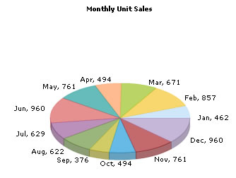

Converting our previous chart to Pie Chart |
In our previous example (My first chart), we had created a column chart to show the monthly sales summary. Here, we'll quickly convert this chart into a 3D Pie chart. To convert a chart type, all you need to do is change the SWF file that you're using. e.g., if you're using a single series Column Chart, just changing the SWF file to Single Series Pie Chart would change the chart output to a pie - XML data remaining the same. Let's quickly see the changes we need to make. For this example, create a copy of Chart.html
and save it as PieChart.html in the same
folder. And, finally edit the HTML code to reflect the following changes: |
| <html> <body bgcolor="#ffffff"> <OBJECT classid="clsid:D27CDB6E-AE6D-11cf-96B8-444553540000" codebase=http://download.macromedia.com/pub/shockwave/cabs/flash/swflash.cab#version=6,0,0,0" width="600" height="500" id="Pie3D" > <param name="movie" value="../FusionCharts/FCF_Pie3D.swf" /> <param name="FlashVars" value="&dataURL=Data.xml&chartWidth=600&chartHeight=500"> <param name="quality" value="high" /> <embed src="../FusionCharts/FCF_Pie3D.swf" flashVars="&dataURL=Data.xml&chartWidth=600&chartHeight=500" quality="high" width="600" height="500" name="Pie3D" type="application/x-shockwave-flash" pluginspage="http://www.macromedia.com/go/getflashplayer" /> </object> </body> </html> |
| In the above code, we've changed the SWF file from FCF_Column3D.swf to FCF_Pie3D.swf and the name of the name to Pie3D. Now, when you view this page in browser, you'll see a pie chart as under: |
|  |